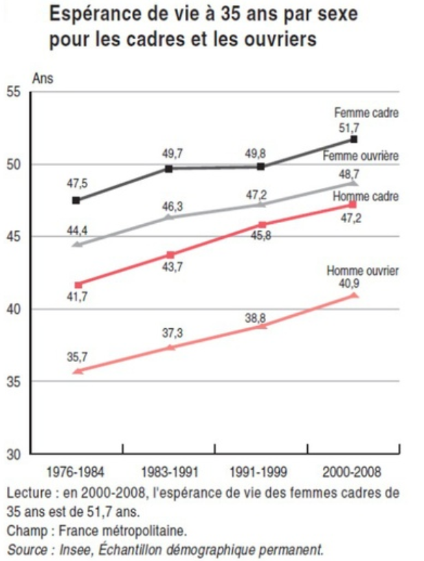
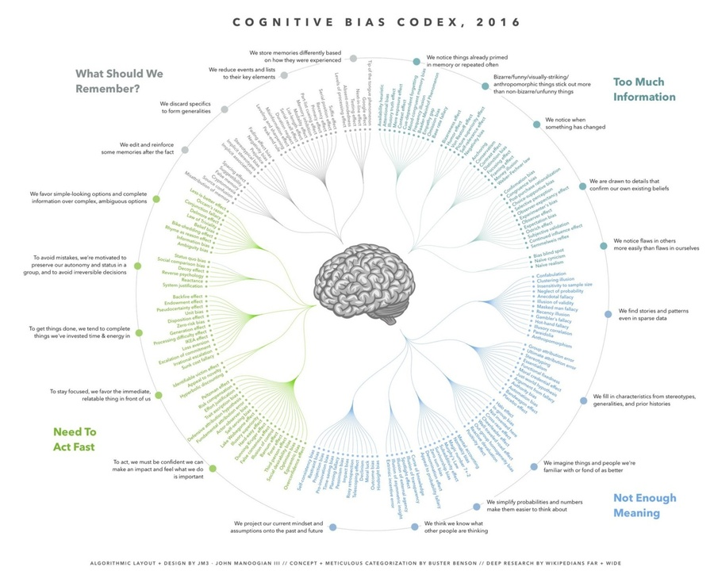

Jacques Généreux avec Jean-Luc Mélenchon l’un des co-fondateurs du Parti de Gauche en 2008 (date à laquelle l’adhésion du Parti Socialiste à l’économie de marché est définitivement actée) et il a animé la construction du programme l’Avenir en commun sur la plate-forme internet du candidat à la Présidence de la République.
Le positionnement de la France Insoumise en matière économique
Face à une doctrine économique qui prône la dérégulation financière, la politique de l’offre, et le démantèlement de la puissance publique, Jacques Généreux oppose une vision dite « keynésienne » qui s’appuie sur la politique monétaire, le soutien humain et financier de la demande et sur la nécessité d’une planification écologique. Ce faisant, il multiplie les démonstrations à différents niveaux de complexité et il égrène de nombreuses informations très bien référencées, ce qui lui permet de s’addresser simultanément au citoyen averti comme au néophyte.
Dans la bibliothèque du lecteur intéressé au renouveau d’une pensée économique à gauche, le livre de Jacques Généreux trouvera donc une place avantageuse entre les travaux de Thomas Piketty et ceux de Frédéric Lordon. Si l’on considère la sortie de l’Euro comme un baromètre de radicalité idéologique, on le placera en effet à gauche du premier et à droite du second, puisqu’il indique que ce scénario devra être envisagé pour établir d’un nouveau rapport de force avec Bruxelles et Berlin, tandis que Thomas Piketty privilégie une tentative de réforme des institutions européennes et que Frédéric Lordon voit dans la sortie de l’Euro une condition sine qua non à toute politique de gauche .
Cependant, l’ambition du (long) billet qui suit n’est pas de discuter la grille de lecture économique de Jacques Généreux mais de proposer un point de vue sur l’aspect le plus original de son livre, qui intéresse mon domaine de compétence. En effet, au-delà de ses analyses politiques et historiques, Jacques Généreux fait appel aux sciences cognitives pour expliquer et critiquer l’évolution économique des sociétés occidentales. Il avait d’ailleurs insisté sur cette dimension de la Déconnomie dans ses interventions à Marianne et Médiapart (ci-dessous), ce qui m’a amené à acheter et à lire son livre.
« Bêtises », « âneries », « stupidités » : tels sont les qualificatifs qui reviennent le plus souvent pour qualifier le corpus théorique du néoclassicisme, qui justifie le modèle néolibéral en proposant de dériver l’économie toute entière à partir d’agents économiques idéalisés. Etat des lieux : « tout le monde se trompe, les néophytes, les politiques, les journalistes, les économistes, mais personne ne sait qu’il se trompe » (p357).
Ceci étant posé, et contrairement à d’autres penseurs de gauche tels que Noam Chomsky, Jacques Généreux refuse en revanche d’assimiler la domination médiatique et académique du néolibéralisme à celle du capital lui-même. C’est-à-dire qu’il refuse d’y voir l’expression principale d’un trafic d’influence, d’une propagande ou d’une corruption directe du discours public par l’argent. D’après lui, les causes de cette domination sont donc à chercher dans une « épidémie de bêtise » (p16), d’où le titre provocateur de l’ouvrage et le lien qu’il cherche à tisser entre sciences économiques et sciences cognitives.
Jacques Généreux discute de ce lien sous trois angles différents que l’on aurait aimé voir plus approfondis compte tenu des ambitions affichées. Ci-après, j’en donne un aperçu synthétique et signale brièvement quelques pistes de réflexions qui ont été oubliées.
Stress et organisation néolibérale du travail
Premièrement, Jacques Généreux discute de l’importance du stress généré par la course à la compétitivité indissociable du capitalisme actionnarial, qui aboutit non seulement à un affaiblissement de la santé psychologique et physique mais également à une diminution de la productivité des salariés et donc des entreprises qui les emploient. Pour illustrer les rapports hiérarchiques pathogènes dans le monde de l’entreprise, il cite plusieurs exemples aussi choquants que quotidiens, valant tantôt pour l’ouvrier, tantôt pour le cadre supérieur, tantôt pour les professions intermédiaires. On pense notamment aux travailleurs de l’industrie de la volaille aux USA (p111), obligés de porter des couches pour tenir la cadence imposée par leurs employeurs et au cas France Télécom, où l’intégration soudaine de l’impératif de compétitivité a mené 57 salariés au suicide sur leur lieu de travail, entre les seules années 2008 et 2010.
Dans ce chapitre, l’auteur insiste donc sur la multiplication des menaces (de licenciement, de « mise au placard », etc.), sur la surveillance généralisée et sur l’absence de considération pour les motivations intrinsèques des salariés, mais on regrette que la question du contrôle exercé par ces derniers sur la finalité et les modalités de leur travail soit si sommairement abordée. De nombreuses études démontrent en effet le lien fort existant entre motivation, bien-être et sentiment d’exercer un contrôle sur les évènements, de sorte que des sources de stress incontrôlables apparaissent bien plus nocives que les sources de stress contrôlables. En effet, les stresseurs incontrôlables altèrent plus profondément le fonctionnement de la sérotonine, ce neuromodulateur qui joue un rôle-clé dans la dépression nerveuse et dans l’action des antidépresseurs que les médecins prescrivent souvent à ceux qui souffrent de troubles de l’humeur liés au travail (d’où résulte au passage une perte de productivité importante). Toutes choses étant égales par ailleurs, les menaces de licenciement économique (hors de contrôle du salarié et caractéristique de l’organisation néolibérale du travail) pourraient donc être plus stressantes et plus couteuses que les menaces de licenciement conditionnées par la performance individuelle, sur laquelle le salarié a plus de contrôle.

Le rôle central des biais cognitifs dans la réfutation de la théorie néoclassique
On l’a déjà évoqué, la théorie néoclassique sous-tend directement la croyance dominante selon laquelle l’économie de marché, le libre-échange, et la flexibilisation du travail constituent ensemble un modèle économique cohérent qui serait validé par la science. Cette théorie repose cependant sur une conception idéalisé des agents économiques (travailleurs, consommateurs, investisseurs) dont on présuppose qu’ils sont: (i) rationnels, (ii) aptes à traiter toute l’information pertinente pour effectuer leurs décisions, (iii) motivés uniquement par le profit.
Or les dernières décennies de recherches en sciences cognitives et en économie comportementale ont démontré avec certitude que ces postulats sont faux : (i) nos préférences économiques sont parfois autocontradictoires et presque toujours suboptimales (aversion au risque, à la perte, à l’attente, etc.), (ii) notre rationalité – lorsqu’elle s’exerce – reste limitée, de sorte que ses calculs ne prennent en compte qu’un nombre restreint de facteurs, laissant aux émotions le soin d’arbitrer le meilleur comportement à avoir vis-à-vis des autres sources d’information, (iii) à travers leurs décisions économiques, les êtres humains ne cherchent pas seulement à maximiser leur profit, mais également leur réputation, leur bonne conscience et leur position dans le groupe social, pour ne citer que quelques exemples.
De ces recherches synthétisées avec justesse, Jacques Généreux conclue que la logique néolibérale marche sur la tête en ignorant superbement la manière dont les agents économiques raisonnent et décident, pour la réduire à une dynamique mathématiquement séduisante mais irréaliste et déshumanisée. Cependant, il omet ici un aspect essentiel des recherches en économie et neuroéconomie expérimentales : les données scientifiques indiquent certes que l’offre et la demande ne se conforment pas aux postulats de la théorie néoclassique, mais elles permettent simultanément de rationaliser le comportements des investisseurs ou des entreprises ( automatisation des stratégies financières) et surtout de formater plus efficacement la demande à l’exigence de consommation continue dont dépend la survie du modèle actuel (on pensera forcément au neuromarketing, mais il ne faut pas oublier le développement du nudge et le raffinement des techniques publicitaires). Contrairement à ce que Jacques Généreux semble penser, il n’est donc pas acquis que les sciences cognitives achèveront de disqualifier le modèle néolibéral. Si l’on n’y prend garde, elles pourraient au contraire offrir une série d’instruments redoutablement efficaces pour le pérenniser !

Pourquoi persévérer dans l’erreur ?
Tout au long des huit premiers chapitres du livre, l’économiste démontre donc la nocivité et la scientificité questionnable du modèle néolibéral, mais il laisse une question en suspens : Pourquoi diable cette école de pensée occupe-t-elle une position si dominante dans nos sociétés ?
Dans son dernier chapitre intitulé « Comprendre la bêtise des intelligents : biais cognitifs, obscurantisme et sectarisme », Jacques Généreux dépasse heureusement l’hypothèse simpliste d’épidémie de bêtise, telle que posée dans l’introduction. Mais les explications originales qu’il fournit laissent un peu le lecteur sur sa faim, comme si les réponses à cette question devaient venir de recherches futures.
Faisant un (très) bref détour par les neurosciences, il propose ainsi que la « bêtise des intelligents » réside dans une pensée réflexe, qui serait siège de tous nos biais cognitifs parce qui dérivant d’une évolution préoccupée par la survie et la reproduction plutôt que par la recherche de vérité. A cette dernière, il oppose l’intelligence rationnelle qu’il associe à un potentiel s’exprimant lentement et à la faveur d’un effort intellectuel intense. Ainsi, son argumentation assimile implicitement l’intelligence rationnelle à une sorte de deus ex machina libéré de nos impératifs biologiques, dont l’usage garantirait à lui seul notre marche progressive vers la vérité. Ce serait trop simple. En réalité, ces deux propositions sont probablement fausses. Premièrement, nos biais cognitifs en matière économique reposent aussi largement sur les structures cérébrales qui déterminent notre réflexion consciente et il se trouve même des situations où les circuits neuronaux les plus « primitifs » sont moins biaisés que les circuits les plus « évolués » de notre cerveau. C’est notamment le cas en matière de perception des probabilités. Deuxièmement, compte tenu de son coût métabolique et développemental, il est impensable que l’intelligence rationnelle humaine soit apparue indépendamment de tout impératif de survie : si nous sommes aptes à raisonner, c’est bien parce que cela a permis à nos ancêtres de mieux survivre et de mieux se reproduire. Ainsi, l’aptitude à raisonner nous permet de marcher vers la vérité mais également de la dissimuler, de la distordre ou de la nier ! Mensonge, mauvaise foi et manipulation sont eux aussi les fruits de notre intelligence rationnelle et des structures cérébrales qui la rendent possible !
Conscient de cette limite de l’appel à l’intelligence, Jacques Généreux reconnait que notre salut dépendra de la capacité à entretenir un débat collaboratif et la construction d’une intelligence collective, mais qu’en revanche, « la compétition, ça rend bête ! » (p368). Or, la théorie argumentative du raisonnement développée récemment par Hugo Mercier et Dan Sperber, et sur laquelle l’auteur fait reposer une partie son argumentaire, stipule bien que « le raisonnement ne sert plus uniquement à déterminer ce qui est vrai, mais aussi et surtout à avoir raison, […], à gagner le débat. […] Cela explique que des personnes très intelligentes soient souvent extrêmement douées pour persévérer dans l’erreur » (p367). Dès lors, on se retrouve face à la contradiction suivante : la compétition avec les autres serait l’essence même de notre motivation à discuter et à argumenter, mais la vérité n’émergerait de nos discussions qu’à la faveur de « conditions particulières d’association et de coopération d’un groupe humain » (p370) ! En d’autres termes, les vertus de la discussion argumentée sont elles-mêmes conditionnées par la bonne foi des acteurs, c’est-à-dire leur aptitude et leur inclination à changer leur position dès lors qu’ils sont confrontés à la fausseté de leurs croyances anciennes.
La question oubliée : le problème de la confiance en sociologie des sciences
Compte tenu du problème abordé à la fin de la Déconnomie, Jacques Généreux aurait pu mentionner une ligne de recherche aussi nouvelle que passionnante dans l’étude des interactions sociales : les signaux de confiance que nous émettons à propos de nos opinions, qu’ils soit directs (« je suis sûr à 90% que l’austérité est nécessaire en temps de crise »), indirects (« l’austérité est l’unique réponse sérieuse à la crise ») ou seulement implicites (par l’intonation, le vocabulaire ou encore la gestuelle associée au discours). Depuis 2010 et un article séminal paru dans la revue Science, Bahador Bahrami et ses collaborateurs montrent en effet comment – et pourquoi –une communication honnête de la confiance que nous avons dans nos propres opinions détermine les bénéfices associés à la mise en commun de nos ressources cognitives et à la délibération collective.
Je dédierai dans le futur un billet à cette question, tant elle est importante pour le renouveau du débat aussi bien démocratique que scientifique. Mais pour le problème qui nous occupe, il suffit d’indiquer que l’émission de signaux de confiance honnêtes à propos de nos opinions est apparemment l’unique manière de combiner fructueusement nos opinions avec celles des autres. Car, en l’absence de tels signaux, il apparait que la performance d’un groupe social est aussi bonne – voire meilleure – lorsque seuls les individus les plus compétents s’expriment et décident. De la même manière, lorsque ces signaux sont biaisés à la hausse (c’est-à-dire lorsque chacun affiche une confiance artificiellement haute en ses propres opinions), la conséquence est identique : tout le bénéfice potentiel de la concertation collective est perdu.
Solidement enracinée dans les mathématiques dites bayésiennes, cette ligne de recherche aborde le problème soulevé par Jacques Généreux d’une façon rafraichissante : le problème n’est pas tant la compétition elle-même qu’un des comportements stimulés par la compétition, à savoir la transmission de signaux de confiance biaisés à propos de nos opinions. Ce processus est évidemment omniprésent dans les conversations politiques entre amis ou les débats publics, mais il fait également des ravages dans le monde académique, où les chercheurs, soumis à une compétition internationale organisée de manière absurde (et d’ailleurs très dépendante du modèle néolibéral du financement et de l’édition scientifique), sont fortement incités à sur-interpréter leurs résultats, à évaluer à la hausse la probabilité pour que leurs hypothèses soient vraies et à soigneusement dissimuler les points faibles de leur expériences. Bien entendu, la majorité des chercheurs résiste à ces incitations, mais leur probité a tendance à diminuer leur impact au sein du monde académique, sans parler de la sphère médiatique où prospèrent quasi-systématiquement ceux qui remplacent volontiers le conditionnel par l’indicatif, le complexe par le simple et le spécifique par le général.
Ces considérations amènent donc à envisager différemment la prééminence de la théorie néoclassique dans le monde académique, le grand cheval de bataille de Jacques Généreux. Scandalisé par la démarche de Jean Tirole – récent « prix Nobel » d’économie – qui est parvenu à dissuader le gouvernement de créer une section dédiée à la recherche hors du modèle néoclassique (p392), Jacques Généreux décrit bien cette annexion par les chercheurs d’obédience néolibérale sur les revues économiques anglo-saxonnes, sur le comité de sélection au prix Nobel et sur les organes de recrutement français (entre 2000 et 2011 seuls 6% des postes de professeurs des universités auraient été attribués à des économistes hétérodoxes non néolibéraux). Mais comment cette OPA a-t-elle pu avoir lieu au moment même où la théorie dominante se voyait réfutée par les sciences cognitives ? A cet état de fait qu’il nous demande de combattre, Jacques Généreux ne propose pas vraiment d’explication.
Or un des éléments essentiels qui distingue la théorie néoclassique des théories concurrentes est son recours beaucoup plus large et systématique aux modèles mathématiques, ce qui lui donne une base plus solide pour convaincre les non-spécialistes de sa véracité. En effet, tout le monde est capable de lire et de comprendre – au prix d’efforts plus ou moins importants – les économistes qui conçoivent d’abord l’économie comme une discipline des sciences humaines et sociales, de sorte que chacun peut aussi se faire une idée du bien-fondé et de la confiance à placer dans leurs conclusions et leurs recommandations politiques. A contrario, très peu de monde est capable de lire et de comprendre les travaux d’économie fortement mathématisés issus de l’école néoclassique. Ainsi, la confiance placée dans les conclusions et les recommandations des économistes néolibéraux dépend en grande partie de la confiance communiquée (honnêtement ou non) par ces économistes eux-mêmes au sujet de leurs propres travaux. On aboutit alors à la mise en place d’un « effet gourou », également théorisé par Dan Sperber, par lequel les pensées les plus obscures sont parfois tenues comme des vérités inaccessibles au commun des mortels qu’il s’agit cependant de respecter et d’appliquer, pour s’approcher au plus près de l’intelligence supérieure du maître.
Inutile d’en dire plus pour comprendre comment des hommes politiques sans bagage mathématique en viennent à afficher une conviction inébranlable dans le bien-fondé de leurs politiques économiques – fussent-elles en contradiction absolue avec l’opinion du commun des mortels qui les a portés au pouvoir.